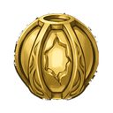
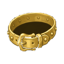
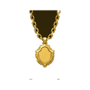

Desert Pyramid D5
DungeonT5Lv 45-50
Entry key: Gold Key T5
Creatures
EXP and gold for defeating one creature. The EXP you actually receive also depends on your level and your bonuses; the creature's card in the game shows your own amount.
| Creature | Level | Base EXP | Gold reward | Drops |
|---|---|---|---|---|
| Desert Stalker | Lv 45 | 31,697 | 213 |  Upgrade Stone T4 Upgrade Stone T4  Gold Ring T5 Gold Ring T5 |
| Anubis Guard | Lv 47 | 33,120 | 251 | Upgrade Stone T4  Gold Dungeon Core |
| Dungeon Guardian T5 | Lv 50 | 35,452 | 313 | Upgrade Stone T4  Gold Earring T5 Gold Earring T5 |
| Dungeon Lord T5 Boss | Lv 50 | 122,309 | 1,080 |  Normal Essence Upgrade Stone T4 Normal Essence Upgrade Stone T4  Gold Belt T5 Gold Dungeon Core Gold Necklace T5 |